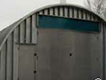
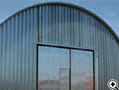
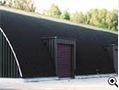

- Общее описание
- Сборка
- Технические характеристики
- Утепление
- Фундамент
- Ворота и окна
-

ДЁШЕВО
В 1,5-2 раза дешевле традиционного варианта строительства
-
БЫСТРО
1 000 м2 за 3-4 недели
-
ГАРАНТИЯ
Срок службы здания 30-50 лет
Универсальный тип здания, которое используется как склад, гараж, терминал и т.д. Ширина до 18 метров и высота до 9 метров позволяют использовать его также в составе спортивного, выставочного или торгового комплекса или как укрытие для крупногабаритной техники.
По окончанию строительства не требуются отделочные работы, а также ремонтные работы раз в три года. За счёт всего этого стоимость ангара значительно ниже по сравнению с дугими технологиями строительства зданий.
Современная технология предоставляет возможность в короткие сроки изготовить и смонтировать крытое арочное сооружение большой площади. Изготовление ангара производится на месте установки сооружения. Продолжительность возведения сооружения площадью 1 000 м2 — две-три недели.
-
ДЁШЕВО
В 1,5-2 раза дешевле традиционного варианта строительства
-
БЫСТРО
1 000 м2 за 3-4 недели
-
ГАРАНТИЯ
Срок службы здания 30-50 лет
Малый вес конструкции позволяет обойтись без мощного дорогостоящего фундамента, что существенно ускоряет работу. Фальцевые соединения секций делают его герметичным, за счёт этого снижаютя расходы на обогрев помещения. Быстровозводимый ангар сейсмоустойчив, выдерживает высокие ветровые и снеговые нагрузки.
- Общее описание
- Сборка
- Технические характеристики
- Утепление
- Фундамент
- Ворота и окна
- Ширинаот 6 до 24 метров
- Высотаот 3 до 12 метров
- Длинаот 10 до 150 метров
- Степень огнестойкостиII, V
- Снеговая нагрузкадо 180 кг/м
- Скоростной напор ветрадо 200 км/час
- Сейсмичность9 баллов
Специальная версия
для печати на А4
Потери тепла через наружные стены составляют до 50 % от общих теплопотерь. Рациональным и эффективным способом сокращения потерь тепла, а значит, снижения затрат на отопление, является утепление наружных стен теплоизоляционными изделиями, которые имеют сопротивление теплопроводности в 10 раз выше, чем материалы, традиционно используемые в строительстве (кирпич, бетон). При этом несущие конструкции здания будут защищены от промерзания, что позволит увеличить срок их службы. За счет отсутствия температурных колебаний и снижения уровня шума в помещении создается комфортный микроклимат.
Напыляемый утеплитель
Утеплитель является термоизоляционным и звукопоглощающим покрытием, не требует крепежа, наносится путем напыления на поверхность. Покрытие возможно напылять в толщине от 15 мм до 200 мм в зависимости от требуемых параметров тепло-технических характеристик здания.
Подвесной утеплитель
При монтаже в арочную конструкцию закладываются с шагом 1220 мм закладные элементы. к которым при помощи шурупов крепится металлический уголок, повторяющий форму арки с меньшим радиусом (радиус определяется толщиной утеплительного материала), к уголку крепится профильный лист с антикоррозийным покрытием. В проем между аркой и профильным листом закладывается утеплительный материал.
Двойная арочная конструкция
В паз панели шириной 305 мм наносится утеплитель, после чего панели монтируются на фундамент.Поверх монтируется вторая арка с большим радиусом, основания обеих арок после монтажа бетонируется. Испоьзуется утеплитель на основе пенополиуритана, минеральной ваты (URSA, ISOVER и др.).
Ленточный фундамент
Сегодня их используют при возведении домов любого типа, в том числе с тяжелыми стенами, цокольными этажами и подвалами. Ленточные фундаменты прокладывают сплошной линией под всеми наружными и внутренними капитальными стенами. Для устройства ленточного фундамента сначала роется котлован. Внутри него размечается линия фундамента. По этой линии устанавливают опалубку. После того как опалубка смонтирована, в нее помещают укрепляющую металлическую арматуру, а затем заливают бетоном.
Столбчатый фундамент
Дают значительную экономию материала. Устройство фундаментов начинается с разбивки плана сооружения. Затем бурят или выкапывают скважины диаметром 250 - 450 мм, глубиной 500 - 750 мм., через каждый 1 - 1,5 м. по периметру. Заливается бетон и устанавливаются закладные.
Монолитная плита
Дают значительную экономию материала. Устройство фундаментов начинается с разбивки плана сооружения. Затем бурят или выкапывают скважины диаметром 250 - 450 мм, глубиной 500 - 750 мм., через каждый 1 - 1,5 м. по периметру. Заливается бетон и устанавливаются закладные.
- Общее описание
- Сборка
- Технические характеристики
- Утепление
- Фундамент
- Ворота и окна
Возможна врезка окон и оконных конструкций любого типа
-

Распашные ворота
с калиткой снаружи ворот
-

Распашные ворота
с калиткой внутри ворот
-

Подъемные ворота
с боковой стороны ангара
-
Распашные ворота
с боковой стороны ангара